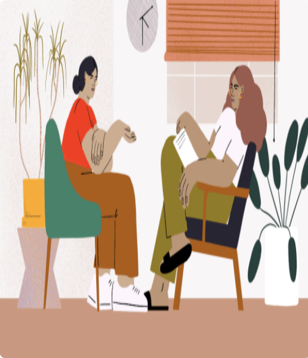
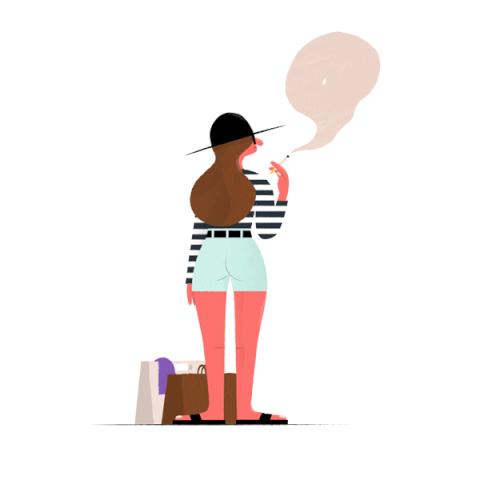
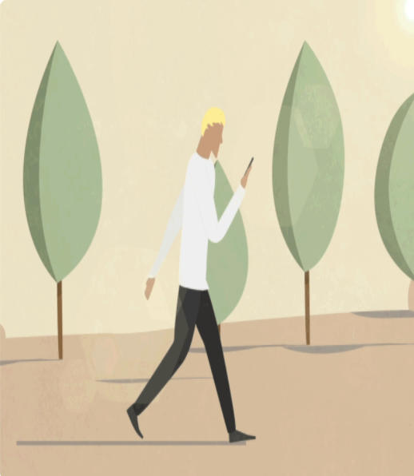
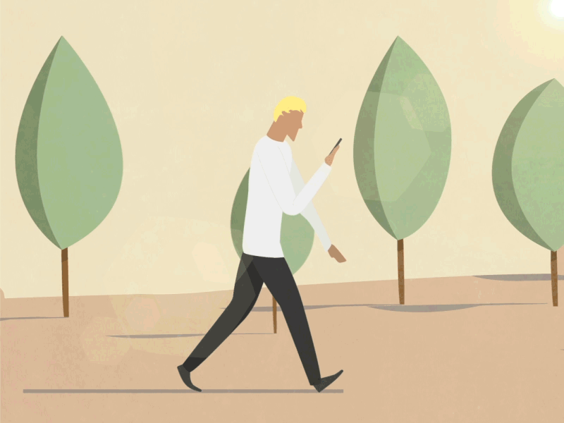
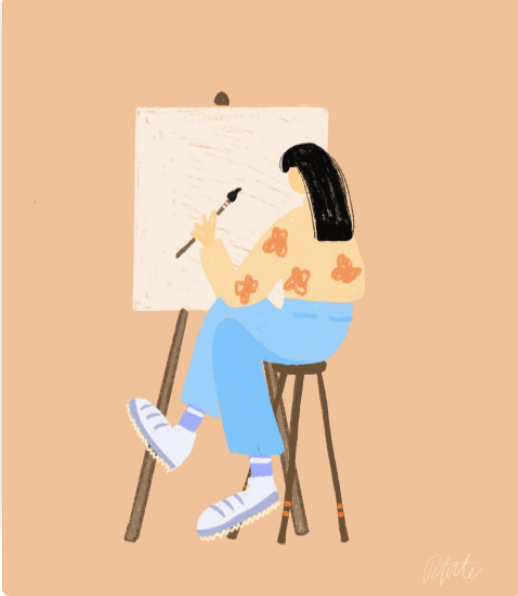
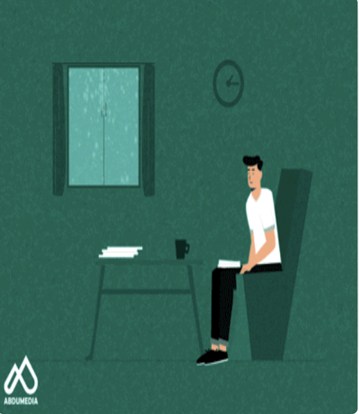
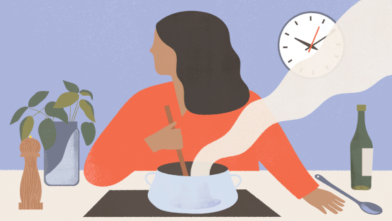

Self-Care Tips


Talking to Somebody
Sometimes, all we need to help us venture deeper into our journey of self-growth and happiness is a good friend.
Having somebody you can confide in can take an immense burden off of your shoulders. This person doeesn't have to
be a psychologist; just having a talk with somebody who will not take advantage of your and your time is key and
is a great start into learning more about how to help yourself.


Treat Yourself
Taking yourself out on that little date or giiving yourself a little shopping spree is the best way to lighten up
your mood and relieving great amounts of stress. Sometimes, you need push your otheer priorities aside and realize
that YOU are the main priority! Not only will this relive stress, but it's a great way to practice self-care [obviously within limits].


Go outdoors
Being in closed spaceS for majoirty of the day isnt good for us both physically and mentally.
Spending time outdoors is a great way to get away from all that is stressing you out during the day. Even a 20 minute
walk is enough for our bodies to re-calibrate from all the lost eneergy while doing our work.


Take on new hobbies
Sitting and dwelling on our numerous amounts of thoughts can become mentally straining. So why not pick up a new hobby?
This isn't me trying to tell you to go out and become the best of the best at an activity (although you should always strive
to be great); just starting something like painting or cooking can be a good way to divert your mind and who knows, maybe you'll find
your true talent!


Say Bye to Electronics
Electronics can put alot of pressure on our eyes and can cause us to deviate from reality. Instead, taking this break can help us de-stress and give us more time to focus on ourselves. If you absolutely need to, maybe
taking precautions such as dimming the brightness or even putting your phone on Do Not Disturb can be a quick and easy way to re-center ourselves with
our priorities.


Eat and drink enough
It seems fairly simple but it's one of the most important things to do. Making sure that you're drinking enough water and eating good portioned food
throughout the day is key to remaining happy and healthy. Malnourishment can cause our bodies to
stress more than usual, which is something we need to prevent. If your body is happy, so will you be!